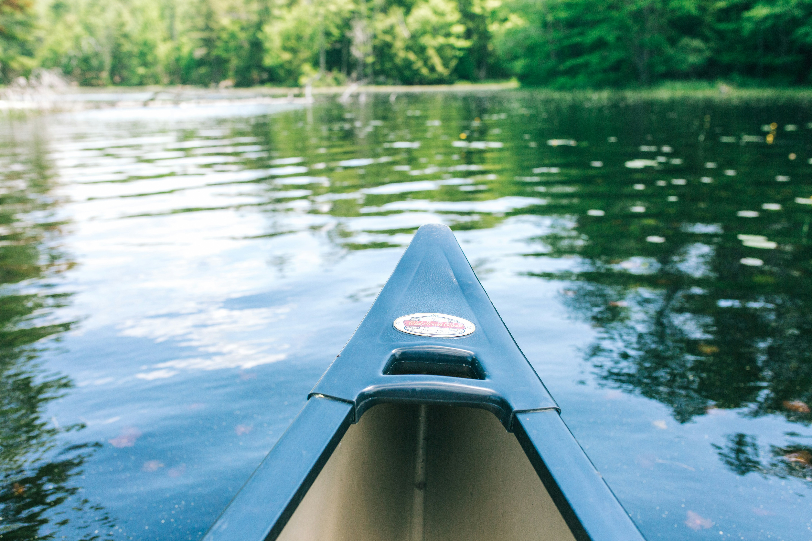
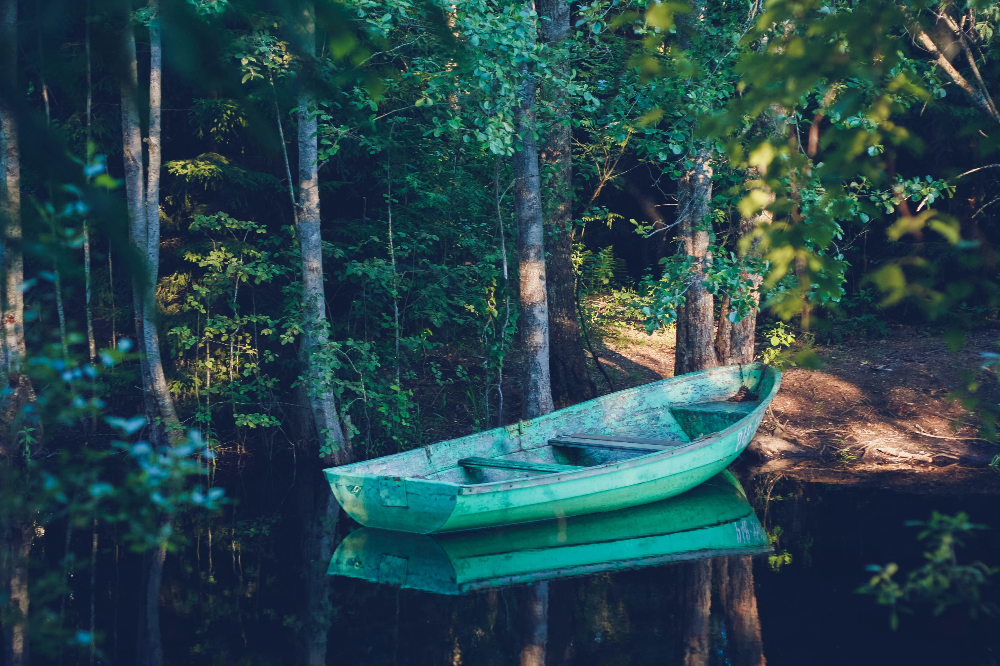
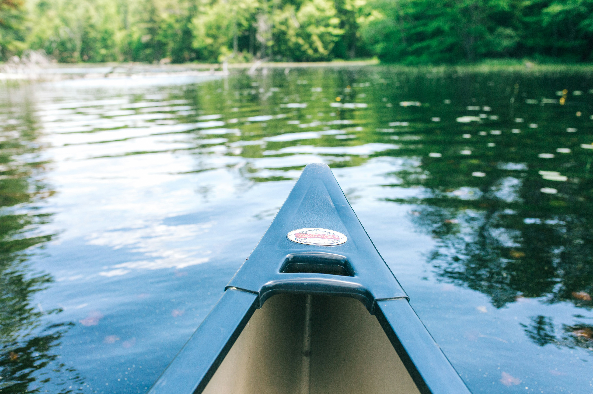
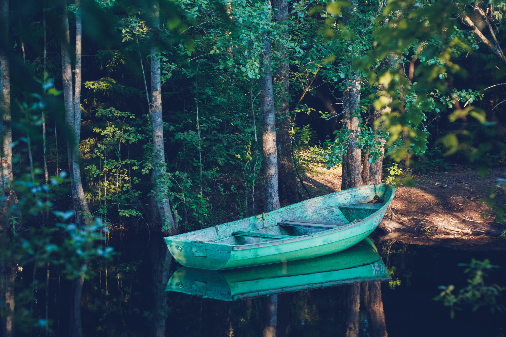
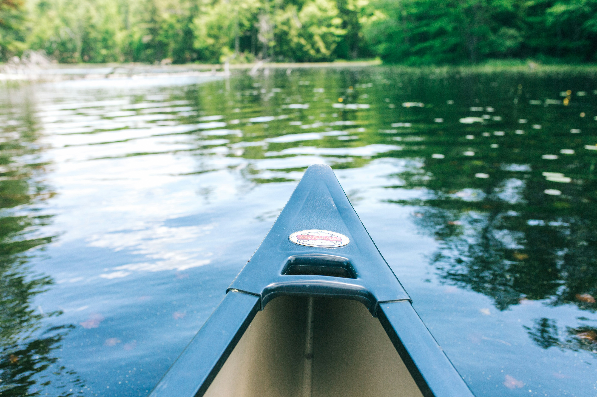
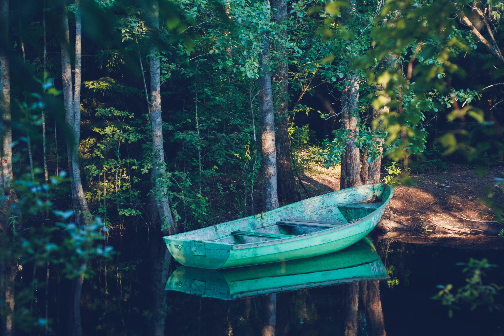

자연과 함께하는 힐링카약파크
천혜의 자연숲에 조성된 일천여미터 수로를 따라서 유유자적하게 카약을 타고
체험과 여유를 즐기는 숲속에서의 힐링여정
고요한 물 위, 나만의 시간.
자연을 오롯이 느끼는 카약 힐링.
 



천혜의 자연숲에 조성된 일천여미터 수로를 따라서 유유자적하게 카약을 타고
체험과 여유를 즐기는 숲속에서의 힐링여정
자연을 오롯이 느끼는 카약 힐링.

